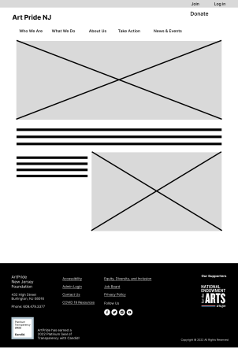
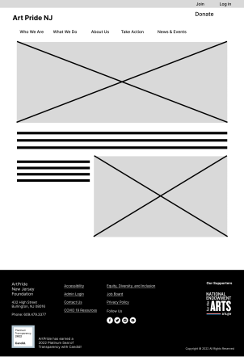
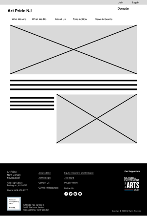

Our direct competitors ( Minnesota State Arts Board and Americans
for the Arts) were very text heavy. Minnesota State Arts Board had a lot of white space, while Americans
for the Arts had better use of color.
Our indirect competitor was Visit NJ. They had a fully-populated events calender system.
Proto-Persona
Meet Finn
We created a proto-persona named Finn. He works as a curator and outreach programmer. He’s frustrated
with how hard it is to find resources for his art center.
Research Objectives
To gain insight into users’ motivations, goals and expectations when visiting an arts advocacy
website,
To understand a user’s experience using an arts advocacy website.
Identify the most important improvements that could be made to arts advocacy websites in order to
enhance user experience and engagement.
Affinity Diagram
Art & Community
Membership
Online Community
Site Needs
issues
The Five key categories developed as we mapped our user insights.
Empathy Map
User Persona
2.Ideation
Story Board
With the Empathy map and Affinity Diagram completed, we created a storyboard to better understand the
key pages our user might interact with.
1.Finneas talks with an artist in his employ who is struggling to find grants. Finneas offers to
assist in their search.
2.While searching for grants he stumbles upon Art Pride NJ.
3. On Art Pride NJ, he is able to sort through available grants and see details about the grant
approval process.
4. While browsing, he stumbles upon Art Pride NJ’s calendar of events. He decides to find events
he can promote to the various artist’s under his employ
5. Finneas takes the information he has learned from Art Pride NJ and shares the grant link with
his employee. He plans to attend an event in the near future, and he already put it on his
calendar.
6. Finneas and his coworkers attend a local art event together.
We used these ideation techniques to create a feature list to focus on the most important features for
our users
User Flow
We then created three user flows based on the important features users have highlighted above. The three user
flows are as followed --
01--
Grant Opportunities:
Click on What We Do
Click on Public Value
Click on Apply for Grants
02--
Calendar of Events:
Click on News and Events
Click on Webinars and Events
03--
Where do Donations go:
Click on What We Do
Click on Public Value
Click on either Community, Education, Health & Wellness, or Economy
3. Wireframing & Prototyping
I took charge creating the protype for our redesign.
Styleguide
Lo-fi Prototype

User Testing
Objectives
Can users locate the page featuring granting opportunities?
Can users navigate to the calendar of events?
Can users figure out where the money is going?
col-sm-8
Final Prototype
Key Takeaways
practiced interaction prototyping using overlays, components, and by creating navigation hero menus. With more time ...


 
